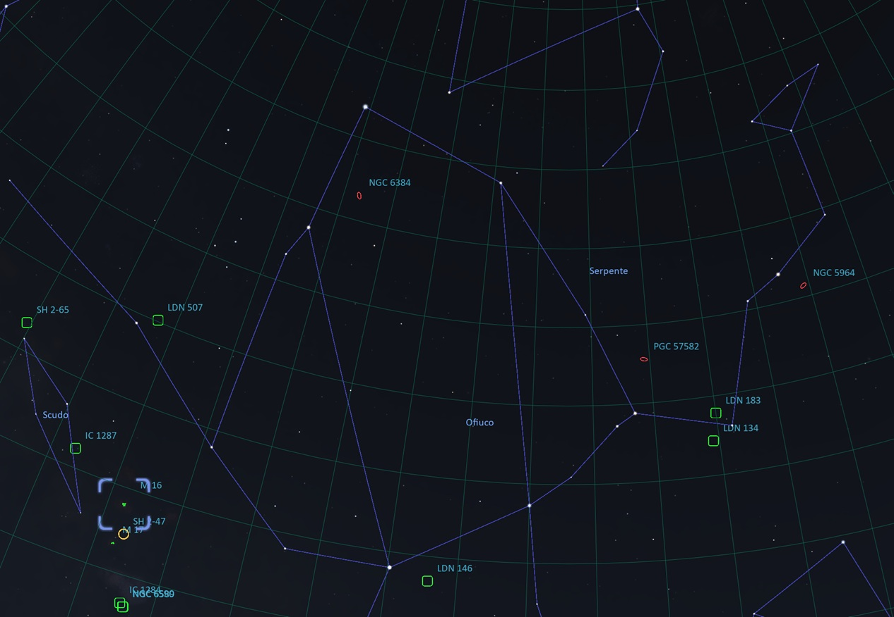

M16 – Nebulosa Aquila M16 – Eagle Nebula
Messier 16 • NGC 6611
Nebulosa a emissione in Serpens Cauda
Messier 16 • NGC 6611
Emission Nebula in Serpens Cauda

Messier 16 • NGC 6611
Nebulosa a emissione in Serpens Cauda
Messier 16 • NGC 6611
Emission Nebula in Serpens Cauda
La Nebulosa Aquila, nota anche come Nebulosa Regina delle Stelle, fu scoperta da Philippe Loys de Chéseaux nel 1746. In seguito fu osservata da Charles Messier, che la catalogò come Messier 16 (M16). È una regione di formazione stellare che ospita un giovane ammasso aperto di circa 500 stelle nella costellazione del Serpente, a circa 5.700 anni luce dalla Terra. The Eagle Nebula, also known as the Star Queen Nebula, was discovered by Philippe Loys de Chéseaux in 1746. It was later observed by Charles Messier, who included it in his catalogue as Messier 16 (M16). It is a star-forming region containing a young open cluster of about 500 stars in the constellation of Serpens, approximately 5,700 light-years from Earth.
La nebulosa è celebre per ospitare alcune delle strutture più spettacolari del cielo profondo, tra cui i famosi Pilastri della Creazione, resi celebri dalle immagini del Telescopio Spaziale Hubble nel 1995. Al suo interno si trova anche la Guglia Stellare, conosciuta anche come Fata della Nebulosa Aquila, una straordinaria colonna di gas e polveri nella quale sono in corso processi di formazione stellare. The nebula is best known for containing some of the most spectacular structures in the deep sky, including the famous Pillars of Creation, made world-famous by images captured by the Hubble Space Telescope in 1995. It also contains the Spire, sometimes referred to as the Fairy of the Eagle Nebula, an extraordinary column of gas and dust where new stars are still forming.
Queste imponenti strutture sono state scolpite dall'intensa radiazione e dal vento stellare emessi dalle giovani stelle massicce dell'ammasso aperto centrale. These impressive structures have been sculpted by the intense radiation and stellar winds produced by the young massive stars within the central open cluster.
| Nome Name | Nebulosa Aquila / Nebulosa Regina delle Stelle Eagle Nebula / Star Queen Nebula |
| Cataloghi Catalogues | Messier 16 • NGC 6611 • Sh2-49 |
| Costellazione Constellation | Serpens |
| Distanza Distance | 5.700 ± 400 anni luce 5,700 ± 400 light-years |
| Tipo di oggetto Object Type | Nebulosa a emissione / Regione H II Emission Nebula / H II Region |
| Dimensione apparente Apparent Size | 70 × 50 arcmin |
| Magnitudine apparente Apparent Magnitude | 6.4 |
| Caratteristica principale Main Feature | Pilastri della Creazione Pillars of Creation |
Le costellazioni di Ofiuco e del Serpente sono strettamente collegate nel cielo estivo. Ofiuco divide il Serpente in due parti distinte: Serpens Caput (la Testa) a ovest e Serpens Cauda (la Coda) a est. The constellations of Ophiuchus and Serpens are closely connected in the summer sky. Ophiuchus divides Serpens into two separate parts: Serpens Caput (the Head) to the west and Serpens Cauda (the Tail) to the east.
M16 si trova appena a ovest di Serpens Cauda. Può essere individuata partendo dalla stella γ Scuti (Gamma Scuti) e spostandosi di circa 3° verso OSO. M16 is located just west of Serpens Cauda. It can be found by starting from the star γ Scuti (Gamma Scuti) and moving approximately 3° toward WSW.
Il periodo migliore per osservarla va da giugno a ottobre, quando la Nebulosa Aquila raggiunge la massima altezza nel cielo durante le ore serali. The best observing season is from June to October, when the Eagle Nebula reaches its highest position in the evening sky.

Come molti astrofotografi, sono sempre stato affascinato dai Pilastri della Creazione, uno degli angoli più iconici e spettacolari del cielo profondo. Like many astrophotographers, I have always been fascinated by the Pillars of Creation, one of the most iconic and spectacular regions of the deep sky.
Fotografai per la prima volta M16 nel 2024 utilizzando un telescopio Newton 150/600. Sebbene il risultato fosse soddisfacente, il campo inquadrato era troppo ampio per valorizzare le straordinarie strutture presenti all'interno della nebulosa. I first photographed M16 in 2024 using a 150/600 Newtonian telescope. Although I was pleased with the result, the field of view was too wide to fully showcase the extraordinary structures within the nebula.
Grazie al mio nuovo telescopio Tecnosky RC8 Ritchey-Chrétien ho finalmente potuto riprendere la Nebulosa Aquila con un'inquadratura molto più stretta, mettendo in risalto gli straordinari dettagli di questa eccezionale regione di formazione stellare. Thanks to my new Tecnosky RC8 Ritchey-Chrétien telescope, I was finally able to capture the Eagle Nebula with a much tighter framing, revealing the extraordinary details of this remarkable star-forming region.
Tempo totale di integrazione: 6 ore 25 minuti Total integration time: 6 hours 25 minutes
Immagine acquisita da Nole (Torino, Italia) tra il 16 e il 18 giugno 2026, con dati aggiuntivi raccolti il 14 luglio 2026. Captured from Nole (Turin, Italy) between 16 and 18 June 2026, with additional data acquired on 14 July 2026.
| Telescopio Telescope | Tecnosky RC8 Carbon |
| Camera principale Main Camera | ZWO ASI294MC Pro |
| Telescopio guida Guide Scope | 60/240 mm |
| Camera guida Guide Camera | ZWO ASI120MM Mini |
| Montatura Mount | Sky-Watcher HEQ5 SynScan GoTo |
| Acquisizione Acquisition | ZWO ASIAIR Pro |
| Elaborazione Processing | PixInsight |
L'immagine è stata elaborata interamente con PixInsight utilizzando il mio workflow RGB personale, comprendente calibrazione WBPP, calibrazione cromatica SPCC, riduzione del rumore, stretching, ottimizzazione dei colori e miglioramento finale del contrasto. The image was processed entirely in PixInsight using my personal RGB workflow, including WBPP calibration, SPCC colour calibration, noise reduction, stretching, colour refinement and final contrast enhancement.
La sfida più impegnativa durante l'elaborazione è stata preservare la delicata emissione dell'ossigeno senza ricorrere a palette di falsi colori. The greatest challenge during processing was preserving the delicate oxygen emission without resorting to false-colour palettes.
Il mio obiettivo era mantenere un aspetto il più naturale possibile, valorizzando allo stesso tempo le sottili tonalità blu che circondano i Pilastri della Creazione. My goal was to keep the image as natural as possible while enhancing the subtle blue tones surrounding the Pillars of Creation.
L'aspetto finale è stato ottenuto utilizzando Generalized Hyperbolic Stretch (GHS), seguito da un'attenta rifinitura cromatica mediante CurvesTransformation. The final appearance was achieved using Generalized Hyperbolic Stretch (GHS), followed by careful colour adjustments with CurvesTransformation.